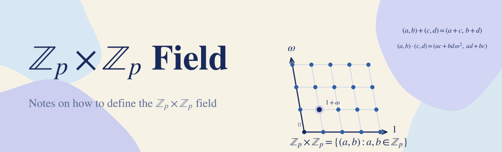

ℤₚ × ℤₚ Field
January 10, 2024 · 14 min read
mathabstract-algebra
Problem:
∀p∈P,Zp×Zp={(a,b):a,b∈Zp}
Does (Zp×Zp,+,.) define a field? If so, how should its addition and multiplication operations be defined?
Let’s look at Zp.
(Zp,+)=(Z/pZ,+) defines a cyclic group under modular addition, and (Zp∗,.) is a group under modular multiplication, where Zp∗={a∈Zp:gcd(a,p)=1} and ∣Zp∗∣=φ(p) (in this case, the integers from 1 to p-1).
We also know that (Zp,+,.) is a field, unlike (Z,+,.), which is only an integral domain; this is easy to prove.
Now let’s look at polynomial rings.
Theorem 1.1: (R[x],+,.), the polynomial ring over the integral domain R, defines an integral domain.
xn=(...,0,0,1,0,0,...)
R[x]={Σn=0∞anxn:an∈R}
(a0+a1x+...+anxn)+(b0+b1x1+...+bmxm)=(a0+b0)+(a1+b1)x+...
(a0+a1x+...+anxn).(b0+b1x1+...+bmxm)=c0+c1x+...+cn+mxn+m
where ck=Σi=0kaibk−i.
Proof.
- unity: ∀f(x)∈R[x],(1x0).f(x)=f(x).(1x0)=f(x)
- commutative ring: ck=Σi=0kaibk−i=Σi=0kbiak−i
- no nonzero zero divisors:
This means f(x).g(x)=0⟶f(x)=0∨g(x)=0, since we have ck=Σi=0kaibk−i and R is an integral domain, ck would not be zero if f(x) and g(x) are both non-null polynomials. □
Definition (Maximal Ideal): An ideal I is a maximal ideal of (R,+,.) iff there is no ideal I1 in R such that I⊂I1⊂R.
Theorem 1.2: Maximal ideals of F[x] are of the form ⟨f(x)⟩={p(x)∈F[x]:∃g(x)∈F[x],p(x)=f(x)g(x)} where f(x) is an irreducible polynomial in F[x].
Proof.
Proof by contradiction. Assume f(x) is reducible and ⟨f(x)⟩ is a maximal ideal of F[x].
So ∃g(x),t(x)∈F[x],p(x)=g(x).t(x). This means ⟨f(x)⟩⊂⟨g(x)⟩∧⟨f(x)⟩⊂⟨t(x)⟩.
But we assumed that ⟨f(x)⟩ is a maximal ideal of F[x]. ⊥
Theorem 1.3: If I is a maximal ideal and (R,+,.) is a commutative ring with unity, then the factor ring R/I is a field.
Theorem 1.4: Let I be an ideal of (R,+,.), then (R/I,+′,.′) is a ring.
(a+I)+′(b+I)=(a+b)+I
(a+I).′(b+I)=(a.b)+I
Example: By Theorem 1.1, Z3[x] is an integral domain. Let f(x)=x2+1; it is irreducible in Z[x].
Z3[x]/⟨f(x)⟩={⟨f(x)⟩,(1)+⟨f(x)⟩,(2)+⟨f(x)⟩,(x)+⟨f(x)⟩,(x+1)+⟨f(x)⟩,(x+2)+⟨f(x)⟩,(2x)+⟨f(x)⟩,(2x+1)+⟨f(x)⟩,(2x+2)+⟨f(x)⟩}
∣Z3[x]/⟨f(x)⟩∣=9
Definition (Homomorphism): A map f:(R1,+1,.1)→(R2,+2,.2) is a ring homomorphism if ∀x,y∈R1,f(x+1y)=f(x)+2f(y) and f(x.1y)=f(x).2f(y).
Definition (Isomorphism): A homomorphism f:(R1,+1,.1)→(R2,+2,.2) is a ring isomorphism if f is a one-to-one correspondence.
Theorem 1.5: Let f:(R,+1,.1)→(F,+2,.2) be an isomorphism. If F is a field, then R is also a field.
Theorem 1.6: Let f:(R1,+1,.1)→(R2,+2,.2) be a homomorphism; then ker(f)={x∈R1:f(x)=02} is an ideal of R1.
Theorem 1.7 (First Isomorphism Theorem): Let f:(R1,+1,.1)→(R2,+2,.2) be a homomorphism; then h:R1/ker(f)≅Im(f) with the rule h(a+ker(f))=f(a).
Definition (Degree): deg(f(x)) is the largest n∈W such that an=0.
Theorem 1.8 (Euclid’s Division Lemma): Let f(x)=0,g(x)∈F[x], then ∃q(x),r(x)∈F[x],g(x)=f(x).q(x)+r(x) such that 0≤deg(r(x))<deg(f(x))
Definition (Root): ω is called a root of the polynomial f(x) iff f(ω)=0 i.e. ∃g(x)∈F[x],f(x)=(x−ω)g(x)
Example: Let f(x)=(−8+11x+−6x2+x3)∈Z[x], then ω1=1, ω2=2 and ω3=3.
So, let’s play the game.
Main Theorem: Let (R,+,.) be an integral domain and p(x) be an irreducible polynomial in (R[x],+,.) such that p(ω)=0 then R[x]/⟨p(x)⟩≅F[ω] and F[ω] is a field.
Proof.
Let f:(R[x],+,.)→(R[ω],+,.) be a ring homomorphism.
f(a0+a1x+a2x2+...+anxn)=a0+a1ω+a2ω2+...+anωn
By Theorem 1.6, ker(f)={q(x)∈R[x]:f(q(x))=0}.
By Theorem 1.8, ∀g(x)∈R[x],∃t(x),r(x)∈R[x],g(x)=p(x).t(x)+r(x)
f(g(x))=f(p(x)).f(t(x))+f(r(x)) by the definition of a homomorphism
g(ω)=p(ω).t(ω)+r(ω)
By assumption, p(ω)=0 then g(ω)=0.t(ω)+r(ω)
g(ω)=r(ω)
This means f(g(x))=0⟷r(x)=0
So ker(f)={q(x)∈R[x]:∃t(x)∈R[x],q(x)=p(x)t(x)}=⟨p(x)⟩
By Theorem 1.7, R[x]/⟨p(x)⟩≅Im(f)=f(R[x])=R[ω]
By Theorem 1.1, R[x] is an integral domain and by Theorem 1.3 R[x]/⟨p(x)⟩ is a field.
By Theorem 1.5, R[ω] is also a field. □
It’s becoming interesting…
Example: (Z5,+,.) is a field. Let p(x)=x2−3 be an irreducible polynomial in Z5[x] with ω2=3. By applying the Main Theorem, Z5[x]/⟨x2−3⟩≅Z5[ω].
Z5[x]/⟨x2−3⟩={(a+bx)+⟨x2−3⟩:a,b∈Z5}
Z5[ω]={a+bω:a,b∈Z5}
∣Z5[x]/⟨x2−3⟩∣=∣Z5[ω]∣=25
This is because the number of permutations of a+bω is 25, since in Theorem 1.8 we have that 0≤deg(r(x))<deg(p(x)).
So let’s generalize for Zp×Zp:
Zp is a field; let p(x) be an irreducible polynomial in Zp[x] such that deg(p(x))=2 and p(ω)=0.
Then, by the Main Theorem, Zp[x]/⟨p(x)⟩≅Zp[ω].
By Theorem 1.8, ∣Zp[ω]∣=p2=∣Zp×Zp∣.
Let (a,b)=a+bω; then we can define addition and multiplication on Zp×Zp:
(a,b)+(c,d)=(a+bω)+(c+dω)=(a+c)+(b+d)ω=(a+c,b+d)
(a,b).(c,d)=(a+bω).(c+dω)=a.c+(a.d)ω+(b.c)ω+b.d.ω2=(a.c+b.d.ω2,a.d+b.c)
Question: How do we know that an irreducible polynomial in Zp[x] such that deg(p(x))=2 exists?
Theorem 1.9: Let (R, +, .) be a ring; then ∀a,b∈R,(−a).b=a.(−b)=−(a.b)
Theorem 1.10 (Lagrange’s Theorem): Let G be a group and H≤G, then ∣G∣=[G:H].∣H∣.
Theorem: Let (Zp,+,.) be a field. Then there are at least ⌊2p⌋ irreducible polynomials of the form p(x) in Zp[x] such that deg(p(x))=2.
Proof.
- p=2:
There exists only x2+x+1.
- p>2:
Our polynomials must have no root in Zp, because any polynomial with a root is divisible by (x−ω), which makes it reducible.
Let Zp∗={a∈Zp:gcd(a,p)=1}, so ∣Zp∗∣=φ(p)=p−1
Since the polynomials must have no root in Zp, we remove the integers a∈Zp∗ such that a∗a=ω2.
By Theorem 1.9, a∗a=(−a)(−a)=ω2. This means there are two different integers in Zp∗ that produce ω2 because there is no element of order 2 by Theorem 1.10.
So there should be ⌊2p⌋ω2’s to choose from, and the polynomials are of the form (x2−ω2). □